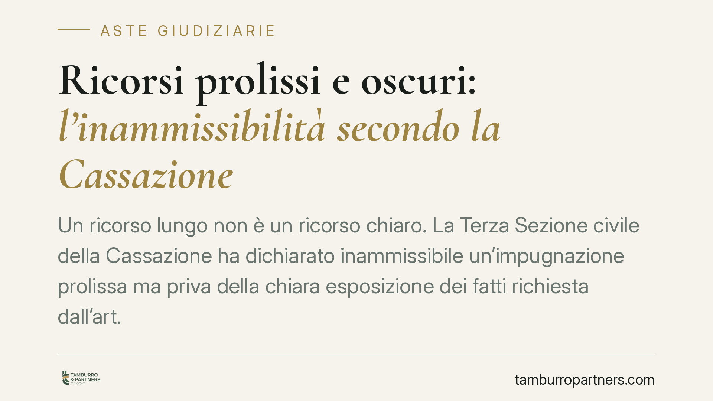

Ricorsi prolissi e oscuri: l'inammissibilità secondo la Cassazione
Un ricorso lungo non è un ricorso chiaro. La Terza Sezione civile della Cassazione ha dichiarato inammissibile un'impugnazione prolissa ma priva della chiara esposizione dei fatti richiesta dall'art. 366 c.p.c., in una procedura di espropriazione immobiliare con opposizioni agli atti esecutivi. Il principio incide direttamente sulla tenuta delle contestazioni nelle aste giudiziarie.

Il caso
Una società espropriata aveva proposto ricorso per cassazione nell'ambito di una procedura di espropriazione immobiliare, a valle di opposizioni agli atti esecutivi ex art. 617 c.p.c. (lo strumento con cui si contestano vizi formali dei singoli atti dell'esecuzione: notifiche, avvisi, ordinanza di vendita).
Secondo quanto riferito, il ricorso era voluminoso ma non consentiva di comprendere con chiarezza i fatti di causa e il percorso processuale. La Terza Sezione civile lo ha dichiarato inammissibile: la mole non supplisce alla chiarezza.
Inquadramento normativo
L'art. 366 c.p.c. elenca i contenuti necessari del ricorso per cassazione, tra cui l'esposizione sommaria dei fatti di causa. La riforma Cartabia (D.Lgs. 149/2022) ha riscritto la norma: oggi tale requisito è richiamato espressamente dal testo vigente, e la sua mancanza — o la sua formulazione confusa — è sanzionata con l'inammissibilità.
La giurisprudenza di legittimità ha chiarito in più occasioni che l'esposizione deve essere autosufficiente: il giudice deve poter ricostruire la vicenda leggendo solo il ricorso, senza consultare gli atti. Un testo lungo e disordinato non assolve a questo compito; anzi, lo ostacola.
Sul piano regolamentare, il principio di sinteticità trova riscontro nei criteri di redazione degli atti introdotti in attuazione dell'art. 46 disp. att. c.p.c. Il quadro premia la chiarezza espositiva e scoraggia la ridondanza, pur senza trasformare i limiti in automatismi sanzionatori.
La funzione nomofilattica
La Cassazione non riesamina i fatti: verifica che il diritto sia stato applicato correttamente e assicura un'interpretazione uniforme delle norme. Questa è la sua funzione nomofilattica. Per svolgerla ha bisogno di ricorsi leggibili, che isolino con precisione la questione di diritto. Un atto che costringe il giudice a districarsi tra pagine ripetitive tradisce lo scopo stesso dell'impugnazione.
Perché conta nelle aste giudiziarie
Nelle procedure esecutive immobiliari la posta in gioco è concreta e spesso definitiva.
Per il debitore espropriato, l'opposizione è l'ultima difesa per far valere vizi dell'esecuzione. Se l'impugnazione finale è dichiarata inammissibile, la pronuncia precedente diventa definitiva: l'atto impugnato è reso intangibile e ogni esame di merito è precluso.
Per il creditore procedente, vale il rovescio della medaglia: un'opposizione inammissibile consolida il risultato dell'asta. La vendita regge, il ricavato si distribuisce.
Per l'aggiudicatario, la stabilità dell'acquisto dipende anche dalla sorte delle opposizioni pendenti. Un ricorso tecnicamente inattaccabile riduce il rischio che l'aggiudicazione venga rimessa in discussione.
In questa materia, dunque, la qualità redazionale dell'atto non è un dettaglio formale: incide sulla titolarità del bene e sulla distribuzione del ricavato.
Implicazioni pratiche
La precisione prevale sulla mole. Chi deve contestare un atto dell'esecuzione — o resistere a una contestazione altrui — ha interesse a ragionare sulla selezione dei motivi, non sulla loro quantità. Un motivo ben costruito vale più di dieci censure sovrapposte.
Il rischio concreto è duplice: perdere la possibilità di un riesame per un difetto di forma, e sopportarne i costi (spese di soccombenza, consolidamento della situazione avversa).
Cosa fare in concreto
- Verifica l'autosufficienza dell'atto: controlla che fatti e vicenda processuale siano ricostruibili leggendo solo il ricorso, senza rinvii ad altri documenti.
- Seleziona i motivi: individua le censure realmente decisive ed elimina ripetizioni e doglianze accessorie.
- Separa fatto e diritto: esponi prima la vicenda in modo ordinato, poi la questione giuridica, evitando di mescolare i piani.
- Rispetta i criteri di redazione: adegua struttura e dimensione dell'atto ai parametri di sinteticità previsti dalla normativa attuativa.
- Valuta i tempi: nelle opposizioni esecutive i termini sono stringenti; organizza la difesa con anticipo sufficiente a curare la forma oltre che il merito.
In conclusione
La pronuncia non introduce un formalismo fine a se stesso. Riafferma che l'impugnazione serve a porre una questione di diritto in modo intelligibile, e che la chiarezza è condizione di accesso al giudizio, non un vezzo stilistico. Nelle aste giudiziarie, dove ogni atto può decidere la sorte di un immobile, questo principio merita particolare attenzione.
Contributo informativo a cura di Tamburro & Partners - Avv. Giuseppe Tamburro. Non costituisce parere legale.
Comprare bene all’asta si può.
Se vuoi acquistare un immobile all’asta in sicurezza o difendere un esecutato, scrivi allo studio. Ti rispondiamo entro un giorno lavorativo.